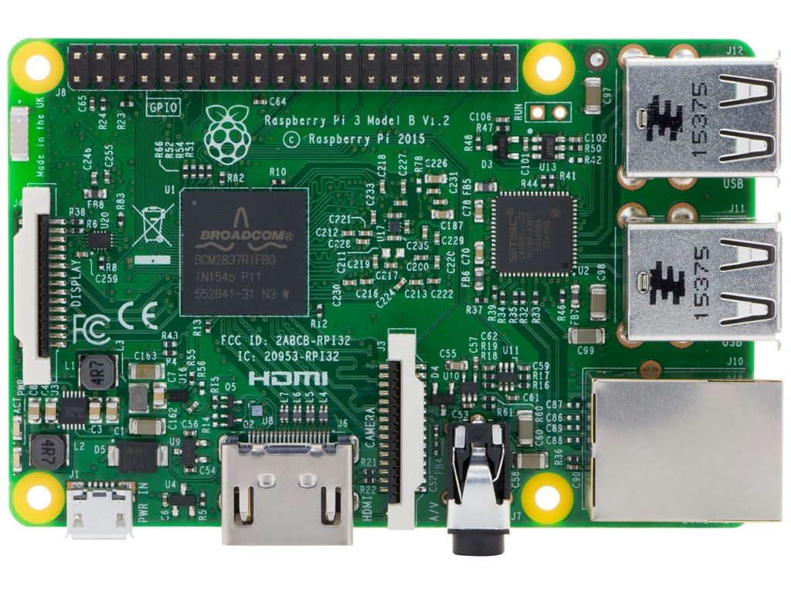
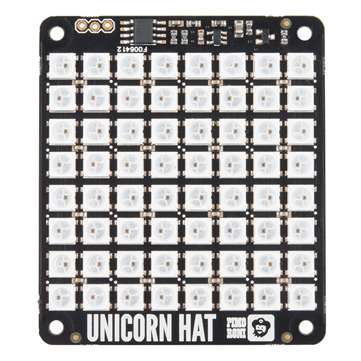
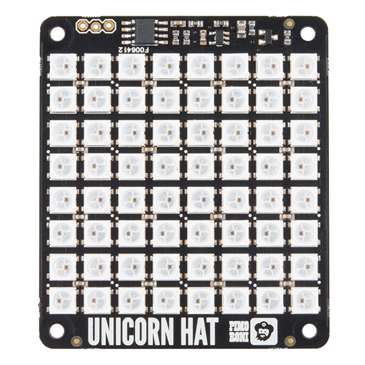

Creating Art With a Raspberry Pi üé®
Adventures in trying out hardware, code, and having fun in a personal project
By Stephanie Nemeth
Creating Art
with a Raspberry Pi
Adventures in trying out hardware, code, and having fun in a personal project
stephanie.lol
Stephanie Nemeth @stephaniecodes
Hi, I'm Stephanie.
üë©‚Äçüî¨
Coding for ~2 years
I have a confession to make...
I'm not an artist.
üë©‚Äçüé®
So why did I want to create art?
So I visited an art museum.
Jean Tinguely
http://www.flickriver.com/photos/46774986@N02/17028829322/
ü§î
What is the role of the artist?
What is the role of the artwork?
What is the role of the viewer?
ü§î
Can the artist become the viewer?
Can the viewer become the artist?
I wanted something ephemeral that would pass like a falling star...
The work had to just transpire, make people dream and talk, and that would be all.
- Jean Tinguely
üé®
Art can be unplanned, fleeting, and created by anyone.
ü§î
How would I ever get here?!?
ü§î
What were my must-haves?
What did I see as stumbling blocks?
Must-Have:
Anyone in the world could interact with the application
Must-Have:
Try to build something with hardware for first time

Must-Have:
Build with Javascript & React to improve my skills
üòï
Am I even capable of this?
Reality Check
Reality Check
Reality Check
Reality Check
Optimize for success
Optimize for success
Optimize for success
üí° LEDs
Optimize for success
Optimize for success
Optimize for success
Stuff For This Project
Unicorn HAT!
64-Led board (H ardware A ttached on T op)
Has an established Python library! üí™
What It Does
Your browser does not support the video tag.
How does it send messages?
Socket.IO
Simplified communication between the clients & Pi ✨
Works on every platform, browser or device üí™
Has client-side libraries for Python and React! üéâ
Lessons Learned: Raspberry Pi
It's really easy to get started building with a Pi!
Lessons Learned: Raspberry Pi
I was intimidated for a long time by Pis and Arduinos.
Ugh, how do I choose?!
Lessons Learned: Raspberry Pi
Recommendation: A Pi starter kit makes starting a breeze. üèù
Lessons Learned: Raspberry Pi
Want to do more than light a single LED but intimidated by soldering or wiring or capacitors straight away?
Lessons Learned: Raspberry Pi
Look into HATs! Easily plugs into your Pi's GPIO and usually has an established python library available!
Final Thoughts ü§î
I had never written any Python or React Native code before this project.
Final Thoughts ü§î
I had never built anything using WebSockets or Socket.IO before.
Final Thoughts ü§î
I had never built a server with JavaScript before.
Final Thoughts ü§î
I had never written for hardware before.
Final Thoughts ü§î
I had never combined so many languages into one project.
Final Thoughts ü§î
Despite all these "nevers ", I managed to pull off a cool project using a Pi. üíÖ
Don't let what you think are your insufficiencies hold you back in tackling the stuff you really wanna build... find a way to optimize for your own success.
Let's demo this thing!! üéâ‚ú®üëæüé®üí©ü¶Ñ
Thank you!
Now go create something wonderful. ‚úåÔ∏èüõ†üíú
stephanie.lol
Stephanie Nemeth @stephaniecodes


 
